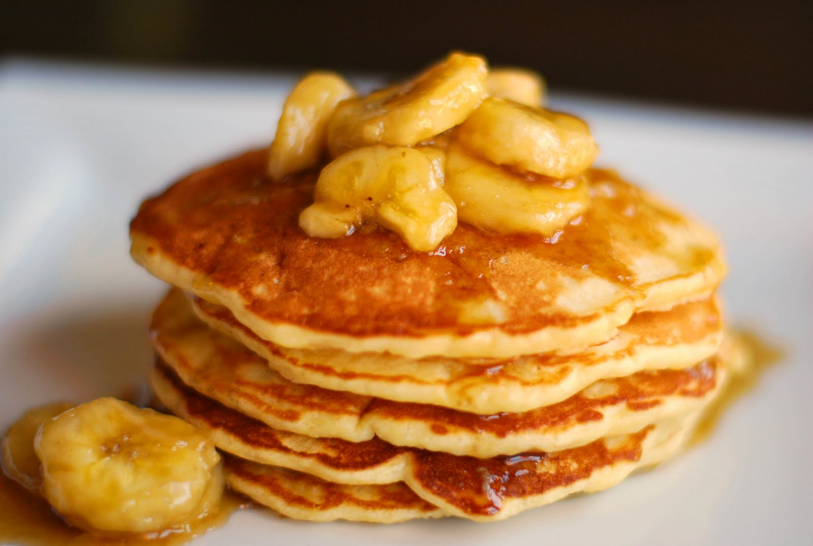

Banana Pancakes

What You Need to Make Banana Pancakes
If you have ready-to-use bananas and a few
kitchen staples, you already have everything
you need to make perfect banana pancakes.
Ingredients
- 1 cup all-purpose flour
- 1 tablespoon white sugar
- 2 teaspoons baking powder
- ¼ teaspoon salt
- 1 egg, beaten
- 1 cup milk
Steps to Make Banana Pancakes
It really couldn't be easier to make this basic banana pancake recipe. You'll find the full recipe below,
but here's a brief overview of what you can expect:
- Mix
- Combine your dry ingredients (flour, sugar, salt, baking powder)
in one bowl and your wet ingredients (egg, milk, vegetable oil, mashed bananas)
in another bowl. Add the dry ingredients to the bowl with the wet ingredients,
then stir until they're incorporated. It's OK if your batter is slightly lumpy.
- Cook
- Pour the batter in ¼ cup portions onto a lightly oiled pan or griddle over
medium-high heat. Cook for a few minutes, flip with a spatula, and cook for
another few minutes (or until each side is golden brown).
- Serve
- Serve your banana pancakes immediately. They're delicious alone or with your
favorite pancake toppings.